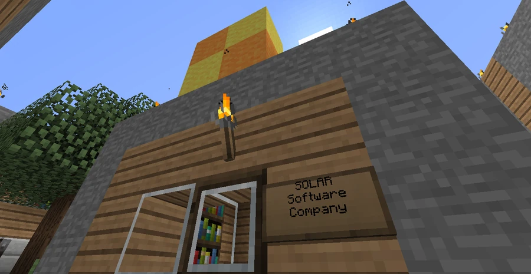

SOLAR
An applied sciences company that grew out of reconstruction research and expanded into testing, portals, and commercial technology.
Contents
- Overview
- History
- H.I.V.E. and the old city
- Foundation and growth
- The Latency problem
- Research programs
- The Void
- Portals and Brian Garlick's expedition
- Chr0NOS and Dan Brosco
- Recruitment and testing
- How the company recruited
- Chambers and involuntary acquisition
- Facilities and products
- Technology catalogue
- References in the testing environments
- Decline, bankruptcy, and succession
- A later account of contamination
- Continuity between v10 and v11
- Documents to begin with
- Sources and credits
Overview
SOLAR Applied Sciences Inc. is a defunct research, engineering, and manufacturing company based in Broville and appearing in v11. Its advertising slogan was “Delivering the Future of Tomorrow, Today!” Its main headquarters were in Downtown, but most operations were concentrated at the SOLAR Scientific Research Facility in the western region. Its laboratories appear in very different places: a forest facility, museum archives, offices recruiting volunteers, and a laboratory beneath an old station. This dispersal is part of the story. Someone could encounter a SOLAR product without ever knowing what had been tested to produce it.
The six reports by The Doctor form the most complete sequence about the company. They begin after the sinking of the old city, cover the manufacture of new products, and end when management authorizes testing without consent. Other documents show the work of scientists and employees who do not speak with management's voice.
History
H.I.V.E. and the old city
H.I.V.E. was the research center associated with the Latency Reactor. The Doctor describes the reactor as a machine capable of obtaining energy and matter from the world itself. The city's commerce, industry, and entertainment became dependent on that discovery. The advantage had a cost: concentrating and operating that power in a limited space was a risk the team failed to contain.
In the ruins beneath Downtown, emergency signs mention a radioactive collapse and instruct people to keep away from H.I.V.E. In the reports, the Doctor accepts responsibility for the accident. He describes survivors trying to rebuild among ruined streets, while part of the population took refuge in lakeside settlements. Construction crews removed the machine from the disaster site.
Foundation and growth
The second report places the new laboratory in the forest west of the city. The team studied the machine's remains because the Doctor believed only the reactor could restore what Broville had lost. An assistant suggested SOLAR, comparing the initiative to a ray of light in their situation. The origin of the name belongs to this foundation account.
By dismantling and analyzing the machine, the scientists recovered commercially useful technologies. The team decided to sell them to finance its work. Demand increased, and a factory was added to the laboratory. In the same period, the Doctor records the opening of a BroCORP tower over the old city's ruins. He sees it as a commercial threat. SOLAR's public brochure repeats the rivalry in advertising language, promising advanced technology at prices slightly below its competitor's.
The Latency problem
The team managed to operate a new model. The difficulty that had accompanied the project since the old city remained: the device produced dangerous quantities of excess Latency. The factory sold products, but the laboratory's central question remained how to channel and dispose of the surplus without repeating the disaster.
Research programs
The Void
A colleague told the Doctor that monks at a temple in the southern mountains had opened a passage to a plane between time and space. SOLAR managed to open its own passage momentarily. The Doctor called the place the Void and asked whether the connection could be sustained and whether there was activity on the other side.
After enlarging the opening, the engineers retrieved a sample. The Doctor describes dark energy and a material that, when cooled to subzero temperatures, served as a good conductor for the passage. His sixth report proposes three investigations: discovering whether the Void was empty, observing its effects on living beings, and testing whether it could contain the reactor's radiation. The proposal records what SOLAR wanted to achieve.
Lab Report Form 8A-1, dated 1998, describes sample X. The material resists thermal expansion, has a liquid core with non-Newtonian behavior, and absorbs localized radiation, including radiation associated with Latency. The laboratory recommends it for conducting radiation to disposal areas, provided it remains refrigerated. An addendum warns that cooling failure could cause a level-five or higher breach. The final addendum orders staff to ignore environmental impacts and proceed. Its resemblance to the material mentioned by the Doctor helps connect the documents, but the form does not identify its origin.
Portals and Brian Garlick's expedition
Final Notes, dated August 10, 1998, follows another research program. Brian Garlick's team treated inscriptions found in desert ruins as instructions for an obsidian portal. They sent explorers through the passage and brought creatures back. Garlick writes that some expedition members suffered severe changes and were sent to the asylum.
He recounts a shock wave bringing down sections of the facility, the lights failing, and colleagues being attacked. Only then did he understand the inscriptions as a warning. The diary ends with a request to destroy the facility before the creatures escape. The book does not identify which desert site was excavated. The expedition article follows the account in order.
Chr0NOS and Dan Brosco
SOLAR's engineering department also signs the Project Chr0NOS manual, found beneath the Museum of Natural History. The document explains how to prepare the capsule and describes the stops as altered fragments of space-time. CRN065 uses the machine to show a version of the Imperial War that, in his account, was concealed from residents.
In the canals, Dan Brosco maintained a laboratory connected to a station and a warehouse. He believed he was close to a discovery that would save many people. His confession attributes an attempted assassination to SOLAR, based on his interpretation of Rosswell's arrival carrying a weapon. Years later, Edward Page finds the elevator shaft behind a bookcase. The bookshop investigation brings together what each character reports.
Recruitment and testing
How the company recruited
The brochure Your Place in Science, dated 1983, instructs applicants to take a number and wait for an interview. The advertisement addresses homeless people, young runaways, and elderly people among others. It offers up to 20 dollars depending on the task and jokingly describes the equipment as potentially dangerous. Evaluation Form 32-A preserves the other side of selection: a form with options to accept or reject the applicant as a test subject.
Chambers and involuntary acquisition
The Doctor writes that the facility acquired modular chambers to observe participants as they overcame physical and mental obstacles. When volunteers became scarce and profits fell, he reports the decision to abduct people. The sixth volume calls the policy the Involuntary Testing Initiative.
Test Subject Observation Form A-7 shows the practice at the level of one case. A 22-year-old woman was taken against her will and subjected to falls and a dose of compound 58-C. The product relieved mild headaches, but the form lists severe reactions. The laboratory does not recommend sale under the SOLAR Medicinals brand. Marketing, however, approved commercialization through company-owned El Medico Rapido stores in Brompton. It is one of the clearest connections between the work in the chambers and neighborhood commerce.
Facilities and products
The western complex stands in the forest, beside Nuketown and south of the asylum. At the entrance to the generator sector, the Test Fire sign marks the beginning of Unicorn Land. The facility inventory also brings together the Uptown cooperation center, the Twin Pines Mall shop, and coastal addresses recorded in the community catalogue.
Products and publications helped build the company's public image. The Weighted Science Brick turns the use of a brick on a pressure plate into a laboratory item. The SOLAR Social Network is described as an internal fax messaging network. In children's books, Humpty Dumpty falls as though in a physics exercise, while the idea of using fairy dust as energy becomes an expensive, unsuccessful research project.
Technology catalogue
Products and projects identified in the community catalogue include:
| Product or project | Recorded location or characteristic |
|---|---|
| Time Machine | Associated with Project Chr0NOS, whose manual is signed by SOLAR engineering |
| SOLAR OS | Found in a shop marked “For rent” at Twin Pines Mall |
| Weaponized Radon-Enriched Melon | A weaponized radon-enriched melon found in the main complex |
| Underwater Generade | A project with a laboratory named “Underwater Generade Development & Research” in the main complex |
| Jumping Pad | A platform found in the main complex's testing rooms |
| Ocelet Pad | A variant similar to the Jumping Pad, recorded only on the hidden testing track |
| Super Cooling Facilities | Super-cooling installations |
| Microcomputer Series 9000 | A microcomputer series |
The catalogue also mentions an attempt to use a SOLAR workstation after twenty years of disuse, an example of the obsolescence of the equipment left by the company.
References in the testing environments
The combination of experiments on poorly treated volunteers, exercises involving putting a block on a button, and abandoned facilities prompted comparisons with Aperture Science from Portal and Portal 2. The Unicorn Land detour reinforces this visual reading; its route and outcome are described in the mission. The comparison is an interpretation of the map's references.
Decline, bankruptcy, and succession
The sixth report records falling profits and pressure from financial advisers. The disaster narrated by Brian occurred in 1998. The 2002 date for bankruptcy and the purchase of assets by Compass come from the community business chronology. The records address financial crisis, accidents, and the abandonment of facilities at different scales.
The community chronology describes a period of success as a consumer products manufacturer and military contractor, even surpassing BroCORP as “Company of the Year.” It then attributes declining product quality to the concentration on secret projects and cites the continued promotion of LaserDisc into the 2000s. The same narrative connects the company's end to the complete failure of the Latency Reactor. After the purchase, Compass converted some infrastructure, but facilities in inaccessible locations, with contaminated interiors or other dangers, remained abandoned. The claim that the founder and chief executive retired to Braulding County in the east is presented as a rumor, without identifying or establishing a specific person's fate.
Compass revived an automated management idea from SOLAR's files. LightSource began as an advertising company to test the proposal. Separately, Don Bestick claims to have bought a collider and a discovery for BroBrah when SOLAR was in difficulties. The two transactions give different destinations to research that the company could no longer support.
A later account of contamination
The community chronology also alleges that, on the day of the v11 release in 2016, a radioactive bomb was accidentally triggered, causing a plutonium explosion across a 500-meter area, mutant vegetation growth, and the destruction of 30% of structures. This episode is not confirmed by the supplied books and should not be confused with the 1998 disaster described by Garlick.
Continuity between v10 and v11
V11 was built in a different world. Its in-world history presents H.I.V.E. before the sinking and SOLAR as part of reconstruction. Outside the fiction, Oldshoes described SOLAR's retroactive incorporation into v10 continuity and a revision of its relationship with H.I.V.E. The older community entry preserves a version that treats the company as a contractor before the disaster.
In that description of v10, SOLAR was initially a software subcontractor for Feels Good Man Pharmaceuticals, housed in a small Downtown office with only two rooms; its name was associated with its sun logo. Chosen as the main contractor for H.I.V.E.'s redstone connections and automation, it reportedly grew into one of the city's most influential companies, second only to BroCORP. The account says that urban growth strained redstone capabilities and led to energy research involving Lag, that small accidents drove the other participants away, and that SOLAR continued until the reactor's collapse destroyed H.I.V.E. and much of Downtown. In the v11 description, the public primarily saw a consumer goods manufacturer, while the company treated the catastrophe as a minor setback and built the western complex and isolated facilities for a new reactor on an unprecedented scale. These details describe the community version of its trajectory; the post-disaster foundation presented above follows the Doctor's account. The comparison between the maps separates the two readings and the alternate-reality hypothesis.
Documents to begin with
- SOLAR Reports 1–6 · Sinking, recovery of the machine, foundation, Void research, and involuntary testing.
- Your Place in Science and Evaluation Form 32-A · The 1983 advertisement and participant selection.
- Lab Report Form 8A-1 and Test Subject Observation Form A-7 · Refrigeration, breach risk, subject acquisition, and neighborhood sales.
- Final Notes · The disaster narrated by Brian Garlick.
- Project Chr0NOS manual · Capsule operation and the nature of the stops.
- LightSource records and Don Bestick's accounts · Destinations of projects and equipment after the crisis.
Gallery



See also
Sources and references
- v11.4.4 maps, signs, books and items World records
- SOLAR Corp · Broville Wiki Community archive
- SOLAR Reports 1–6, The Doctor · collection at −2011, 64, 1741 World books
- Your Place In Science (1983), Evaluation Form 32-A, LAB REPORT FORM [8A-1] (1998) and Test Subject Observation Form A-7 SOLAR documents
- Final Notes, Brian Garlick, August 10, 1998 World book
- Project Chr0NOS, SOLAR engineering manual · −594, 37, 1634 World book
- A Confession, Dan Brosco, and Journal, Edward Page World books
- Oldshoes in Solar, June 20, 2020 and April 25, 2022 Production archive
Text adapted and expanded from SOLAR Corp (contributors and history, revision 4766). Adapted text is available under CC BY-SA 3.0.